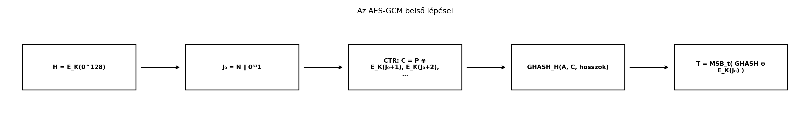

Az előző alfejezetben láttuk, hogy a CTR üzemmód önmagában csak titkosságot ad: a támadó, ha nem is tudja elolvasni az üzenetet, módosíthatja a rejtett szöveget, és a vevő ebből semmit sem vesz észre. Egy HTTPS-kapcsolatban azonban nem elég, hogy a banki átutalási összeg titkos legyen; az is kell, hogy senki ne változtathassa meg útközben a címzett számlaszámát vagy az összeget. Ugyanez igaz egy szoftverfrissítésre: hiába titkos, ha a támadó kicserélheti a letöltött csomagot.
Az AES-GCM (Galois/Counter Mode) ezt a két célt – titkosság és integritás – egyetlen, hatékony konstrukcióban egyesíti. A GCM az egyik legelterjedtebb hitelesített titkosítási mód, amelyet a TLS 1.3, az IPsec és számos modern protokoll is használ. A fejezetben felépítjük a GCM két fő komponensét, az AES-CTR-t és a GHASH-t, megmutatjuk a kapcsolódó adatok szerepét, és részletesen elemezzük a nonce-újrahasználat katasztrofális következményét.
A GCM lényege, hogy a titkosítást és a hitelesítést párhuzamosan, ugyanabból a kulcsból származtatott értékekkel végzi. A titkosítás AES-CTR, a hitelesítés pedig egy speciális, feletti polinom-kiértékelés, a GHASH. Az alábbi folyamatábra a fő lépéseket mutatja.

A folyamat bal oldala ismerős a CTR üzemmódból: a , , … számlálóértékeket AES-szel titkosítva kapjuk a kulcsfolyamot, amelyet az üzenethez XOR-olunk. A jobb oldal a hitelesítés: a kapcsolódó adatot , a rejtett szöveget , valamint a hosszokat egy kulcsú GHASH-függvény dolgozza fel. A GHASH kimenetét az értékkel XOR-oljuk, és ennek legfelső bitje lesz a hitelesítő címke. A kapcsolódó adat tehát hitelesítve van, de nem titkosítva: a vevő ugyanazt az AD-t adja meg, és ha bármelyik bit eltér, a címke ellenőrzése meghiúsul.
Először a GHASH függvényt definiáljuk, mert erre épül a címke.
Definíció (GHASH). Legyen egy 128 bites blokk, amelyet a véges test egy elemének tekintünk. A testet az
redukciós polinommal reprezentáljuk. Legyen az üzenet darab 128 bites blokkra osztva. A GHASH a következő rekurzióval számol:
ahol a -beli szorzás, pedig a bitenkénti XOR. A kimenet . A GHASH tehát egy polinom kiértékelése a pontban: ha az blokkokat a test együtthatóinak tekintjük, akkor
Ez a megfogalmazás rávilágít a függvény lineáris szerkezetére, amelyet később a nonce-újrahasználatos támadásnál használunk ki.
Definíció (AES-GCM). Legyen egy 128, 192 vagy 256 bites AES-kulcs, egy nonce, a titkosítandó nyílt szöveg, a kapcsolódó adat (associated data, AD), és a kívánt címkehossz bitben. Az AES-GCM a következőképpen működik:
ahol a nyílt szöveg hossza bitben, és a legfelső bitet jelöli. 4. Készítsük el a GHASH bemenetét: fűzzük össze a kapcsolódó adatot, a rejtett szöveget és a hosszmezőket. Legyen a rejtett szöveg, pedig a kapcsolódó adat 128 bites blokkra való kiegészítéséhez szükséges nullák száma. Ekkor a GHASH bemenete:
ahol és a hosszak 64 bites, big-endian egész számként ábrázolva. Az üres AD vagy üres plaintext esetén a megfelelő rész üres, de a hosszmezők mindig szerepelnek. 5. Számítsuk ki a GHASH-t: . 6. Képezzük a címkét:
Az AES-GCM kimenete , azaz a rejtett szöveg és a bites címke. A tipikus értéke 128, de a szabvány megengedi a 120, 112, 104 és 96 bitet is; ennél rövidebb címke használata erősen ellenjavallt.
A kapcsolódó adat szerepe kulcsfontosságú: az AD-t nem titkosítjuk, de hitelesítjük. Így olyan mezőket is védhetünk, amelyekre a hálózati rétegeknek vagy az útválasztóknak szükségük van, mint például egy IP-csomag fejléce vagy egy TLS-rekord típusa. Ha a támadó az AD bármely bitjét megváltoztatja, a vevőnél a címke nem fog illeszkedni.
A valódi GCM a
testben dolgozik, ami kézzel nehezen számolható. A GHASH mechanizmusát
azonban egy kis testben is bemutathatjuk. Válasszuk a
testet a
redukciós polinommal. Legyen a
GHASH-kulcs a polinom
,
azaz a 2 elem, és legyen két 4 bites bemeneti blokkunk:
(a 8 szám) és
(a 6 szám). Számoljuk ki a GHASH rekurziót.
1. lépés: .
2. lépés: . Mivel a testben kongruens -gyel, ezért (a 3 szám).
3. lépés: (az 5 szám). Ezt szorozzuk -szel:
ami a testben a 10 szám (binárisan 1010). A GHASH
kimenete tehát 10. Ez a kis példa jól mutatja a két alapművelet, a XOR
és a testbeli szorzás váltakozását.
Megjegyzés. A valódi
szorzás hatékonyan elvégezhető a 128 bites regiszterek és a
pclmulqdq utasítás segítségével, de a fenti logika
ugyanez.
Az AES-GCM szépsége, hogy egyetlen AES-kulcsból két különböző szerepű értéket származtat: a CTR-rész a számlálókat titkosítja, a hitelesítő rész pedig a GHASH-kulcsot és a maszkot használja. Mivel a nonce-tól függ, a titkosító kulcsfolyam és a hitelesítő maszk üzenetenként eltérő, feltéve, hogy a nonce egyedi.
A biztonsági érvelés két pilléren nyugszik:
Az AES mint pszeudorandom permutáció (PRP). Ha az AES-t véletlen permutációval helyettesítjük, akkor a CTR-rész egy egyszer használatos kulcsfolyamot ad, amely a nyílt szöveget tökéletesen elfedi. A és az értékek is véletlennek tekinthetők.
A GHASH mint univerzális hash-függvény. A GHASH egy polinom kiértékelése a pontban. Ha véletlen és titkos, akkor a GHASH erős integritási garanciát ad: annak valószínűsége, hogy egy támadó két különböző bemenethez ugyanazt a GHASH-kimenetet találja, legfeljebb , ahol a blokkok száma. Ezért a címke hamisításának valószínűsége kicsi.
A GCM formális biztonsági korlátjait, például azt, hogy hány blokk után válik a születésnapi hatás miatt a címke ütközési valószínűsége nem elhanyagolhatóvá, a Konkrét biztonság és üzemmódok biztonsági korlátai alfejezetben tárgyaljuk részletesen. Itt elég annyit rögzíteni: a GCM akkor tekinthető biztonságosnak, ha a nonce-ok egyediek, és egy kulccsal nem titkosítunk több száz gigabájtnál lényegesen nagyobb adatmennyiséget.
Továbbvitt eredmény. Az AES-GCM AEAD-konstrukciót használjuk a ChaCha20-Poly1305 és az AEAD-interfész alfejezetben, ahol az AEAD-interfészt és az alternatív módot tanuljuk; a A TLS 1.3 kézfogás alfejezetben a TLS 1.3 egyik kötelező AEAD-módjaként; és az 1. projekt: fájltitkosító eszköz AEAD-dal és jelszóból származtatott kulccsal projektben. A nonce-újrahasználat következményeit a Nonce-visszaélés-ellenállás és kulcshasználati korlátok alfejezet általánosítja.
A GCM legsúlyosabb sebezhetősége akkor jelentkezik, ha ugyanazt a párt kétszer használjuk. Az első, azonnali következmény a CTR-részből adódik: mivel a kulcsfolyam ugyanaz, a két rejtett szöveg XOR-ja megegyezik a két nyílt szöveg XOR-jával:
Ha a támadó az egyik nyílt szöveget ismeri – például egy szabványos HTTP-fejlécet, vagy egy üzenet elejét –, a másik teljes nyílt szöveget visszanyerheti. Ez önmagában is végzetes, de a GCM-nél a helyzet még rosszabb.
A második, rejtettebb támadás a hitelesítő kulcs kinyerése. Tegyük fel, hogy két üzenethez ugyanazt a nonce-ot használták. Ekkor a két címke:
Mivel közös, a két egyenletet kivonva:
A GHASH polinom kiértékelése miatt a jobb oldal egy -ban legfeljebb annyiadfokú polinom, ahány blokkból áll a két bemenet. Már egyetlen ismétlés is elég: a jobb oldal -nak egy legfeljebb -edfokú polinomja ( a hosszabb bemenet blokkszáma, +1 a hosszblokk), így ennek a polinomnak a gyöke. Véges test feletti polinom gyökei hatékonyan megtalálhatók (Cantor–Zassenhaus-algoritmus; a részletek meghaladják a könyv szintjét), és legfeljebb jelölt marad; egy további nonce-ismétlés vagy egy hamisítási próbálkozás kiválasztja a helyeset. Ez a híres Joux-féle „tiltott támadás” (forbidden attack).
Amint a támadó ismeri -t, az maszkot is kiszámíthatja például az első címkéből:
Ekkor a támadó tetszőleges párhoz érvényes címkét tud készíteni ugyanazon nonce mellett:
Ez azt jelenti, hogy a hitelesítés teljesen összeomlik: a támadó hamis üzeneteket injektálhat, amelyeket a vevő hitelesnek fogad el. A támadás elnevezése arra utal, hogy a nonce-újrahasználat a GCM-ben „tiltott”: soha, semmilyen körülmények között nem fordulhat elő.
Példa a XOR-levezetésre. Tegyük fel, hogy két
üzenetet ugyanazzal a nonce-szal titkosítottak, és a támadó a
és
rejtett szövegeket látja. Ha a támadó tudja, hogy
a "GET / HTTP/1.1\r\n" szöveg, akkor kiszámítja a
kulcsfolyamot
,
majd
.
Ezzel a második üzenet nyílt szövege azonnal kiderül. A Joux-támadás
ennél tovább megy: a
kinyerésével a hitelesítést is megkerüli.
A GCM a gyakorlatban mindenhol jelen van. A TLS 1.3 kézfogás után az
alkalmazásadatok titkosítására a TLS_AES_128_GCM_SHA256
vagy a TLS_AES_256_GCM_SHA384 rejtjelcsomag az egyik
leggyakoribb választás. A böngésző és a szerver közötti
HTTPS-forgalomban a weblap tartalma, a cookie-k és a űrlapadatok GCM-mel
védettek. A GCM gyors, hardveresen gyorsított (AES-NI és
pclmulqdq utasításokkal), ezért nagy terhelésű szervereken
is népszerű.
A nonce-újrahasználat azonban a valóságban is előfordult. 2016 körül egy felmérés – amelynek pontos számai és az érintett rendszerek ellenőrzésre szorulnak – azt találta, hogy számos nyilvános HTTPS-szerver a TLS 1.2 GCM-rekordjainak 8 bájtos explicit nonce-részét ismételte (például véletlenül vagy hibás számlálóval generálta), így ugyanazon kapcsolatkulcs alatt azonos nonce fordult elő; ez elvileg lehetővé tette a fent bemutatott támadásokat. (A 4 bájtos implicit rész kapcsolatonként rögzített, ez nem hiba.) A tanulság: a nonce-kezelést nem szabad a véletlenre bízni; a protokolloknak és a könyvtáraknak garantálniuk kell az egyediséget, és a kulcsokat rendszeresen cserélni kell.
A cryptography csomag magas szintű AESGCM
osztálya elrejti a GHASH és a CTR részleteit, és biztonságos
alapbeállításokat ad. A következő kód egy 256 bites kulccsal, véletlen
96 bites nonce-szal titkosít egy üzenetet, miközben a kapcsolódó adatot
is hitelesíti.
# OKTATÁSI CÉLRA – NEM ÉLES HASZNÁLATRA
from cryptography.hazmat.primitives.ciphers.aead import AESGCM
import os
# 256 bites kulcs generálása (élesben a cryptography ezt biztonságosan teszi)
key = AESGCM.generate_key(bit_length=256)
# 96 bites véletlen nonce; SOHA ne használd ugyanazt a nonce-ot kétszer ugyanazzal a kulccsal
nonce = os.urandom(12)
aad = b"https://example.com/order/1234"
plaintext = b"A termek ara: 12990 Ft"
aesgcm = AESGCM(key)
ct = aesgcm.encrypt(nonce, plaintext, aad)
print("nonce (hex):", nonce.hex())
print("ciphertext + tag (hex):", ct.hex())
print("ciphertext hossz:", len(ct), "byt (a plaintext 22 byt + 16 byt tag)")
print("decrypt:", aesgcm.decrypt(nonce, ct, aad).decode("utf-8"))Várt kimenet (a nonce és a rejtett szöveg véletlenszerű, ezért csak a szerkezet ellenőrizhető):
nonce (hex): 3f9a2b...
ciphertext + tag (hex): 6f1c0d...
ciphertext hossz: 38 byt (a plaintext 22 byt + 16 byt tag)
decrypt: A termek ara: 12990 FtA kódban a nonce = os.urandom(12) garantálja a 96 bites
hosszt. Ha a címke vagy az AD nem illeszkedik, a decrypt
hívás InvalidTag kivételt dob, ezért a hívónak nem kell
külön ellenőriznie a taget.
Nonce-újrahasználat. Ugyanazt a nonce-ot kétszer használni ugyanazzal a kulccsal végzetes. A fenti Joux-támadás a hitelesítő kulcsot is felfedi, és a támadó tetszőleges üzenetet hamisíthat. Megoldás: minden üzenethez friss, egyedi nonce; ha véletlen nonce-ot használunk, korlátozzuk az üzenetek számát a születésnapi ütközés miatt (lásd Nonce-visszaélés-ellenállás és kulcshasználati korlátok).
A random modul használata nonce
generálásra. A random modul nem kriptográfiai
generátor: azonos seed (például újraindítás vagy fork után)
esetén ugyanazt a nonce-sorozatot adja, ami nonce-újrahasználathoz
vezet. A GCM nonce-ának nem kell titkosnak vagy kiszámíthatatlannak
lennie, csak egyedinek; ha véletlen, akkor os.urandom vagy
a secrets modul kell.
Címke csonkolása. A GCM megengedi a 128 bitnél rövidebb címkét, de a 96 bit alatti címke hossza jelentősen csökkenti a hamisítás elleni védelmet. Például egy 32 bites címke esetén a támadó átlagosan próbálkozással hamis címkét találhat. A gyakorlatban mindig 128 bites címkét használjunk.
A kapcsolódó adat elhagyása. Ha az AD-t üresen hagyjuk, a protokoll olyan metaadatai, mint a csomagszám vagy a protokollverzió, hitelesítetlenek maradnak; a támadó downgrade támadást hajthat végre. Mindig hitelesítsük az összes olyan mezőt, amely a címzettnek fontos, még akkor is, ha azok nem titkosak.
A tag-ellenőrzés elmulasztása. Saját
GCM-implementáció esetén a fejlesztők néha elfelejtik összehasonlítani a
címkét a visszafejtés előtt, vagy a tag-összehasonlítást nem konstans
időben végzik. A cryptography és más jól auditált
könyvtárak ezt beépítve kezelik; soha ne írjunk saját AEAD-ot éles
használatra.
1. feladat (A) Definiáld a GHASH függvény rekurzióját, és írd le, mi a szerepe a értéknek.
2. feladat (A) A fenti -példában legyen (a 3 szám), (a 4 szám) és (a 10 szám). Számold ki a GHASH kimenetét.
3. feladat (B) Írj Python-kódot, amely az
AESGCM osztállyal titkosít egy üzenetet egy adott AD-vel,
majd próbáld meg visszafejteni rossz AD-vel. Mit tapasztalsz? (A kód
legyen rövid, és a megjegyzésben jelöld, hogy a nonce-ot soha nem szabad
újrahasználni.)
4. feladat (B) Tegyük fel, hogy két üzenetet ugyanazzal a nonce-szal titkosítottak GCM-mel, és a támadó ismeri a rejtett szövegeket és , valamint a nyílt szöveget. Vezesd le, hogyan kapja meg a támadó a nyílt szöveget.
5. feladat (C) Vázold a Joux-féle tiltott támadás lépéseit: hogyan lehet ugyanazon nonce mellett két címkéből kinyerni a GHASH-kulcsot, és miért tud ezután a támadó tetszőleges üzenetet hitelesíteni?
6. feladat (D) Egy nagy terhelésű webszerver GCM-et használ a HTTPS-forgalom titkosítására. Javasolj nonce-kezelési stratégiát, amely megakadályozza a nonce-újrahasználatot, és indokold, miért fontos a kulcsok rendszeres cseréje még akkor is, ha véletlen nonce-ot használsz.
Önellenőrzés – válaszok
1. feladat – Megoldás. A GHASH rekurziója: , , ahol a bemeneti blokkok, a GHASH-kulcs, a -beli szorzás. A érték , és titkos, mert ha ismert lenne, a támadó üzeneteket hamisíthatna.
2. feladat – Megoldás.
,
,
.
.
.
Mivel a fok 3 < 4, nincs redukció,
(a 12 szám).
(a 10 szám).
A kimenet tehát 10.
3. feladat – Megoldás. A kód:
# OKTATÁSI CÉLRA – NEM ÉLES HASZNÁLATRA
from cryptography.hazmat.primitives.ciphers.aead import AESGCM
import os
key = AESGCM.generate_key(bit_length=256)
nonce = os.urandom(12) # soha ne használd újra ugyanazzal a kulccsal
aad = b"fejlec"
plaintext = b"titkos uzenet"
aesgcm = AESGCM(key)
ct = aesgcm.encrypt(nonce, plaintext, aad)
try:
aesgcm.decrypt(nonce, ct, b"rossz aad")
print("Nem dobott kivetelt")
except Exception as e:
print("Kivetel:", type(e).__name__)Várt kimenet: Kivetel: InvalidTag. A rossz AD miatt a
címke nem illeszkedik, és a decrypt kivételt dob.
4. feladat – Megoldás. Mivel a nonce ugyanaz, a CTR-rész ugyanazt a kulcsfolyamot használja. Ezért és . A támadó kiszámítja , mert ismeri -t. Ezután . Így a nyílt szöveg azonnal kiderül.
5. feladat – Megoldás. A támadó két azonos nonce-szal titkosított üzenetpárt ismer: és . Mivel a nonce azonos, közös, ezért . A GHASH polinom kiértékelés, így ez egy egyenlet a ismeretlenre. Ebből egy legfeljebb -edfokú polinom gyöke; a gyököket polinomfaktorizációval (pl. Cantor–Zassenhaus) megtalálva legfeljebb jelölt marad, amelyet egy további ismétlés vagy hamisítási próba szűkít le. Ezután az maszkot az első címkéből számítja: . Most már bármely párhoz érvényes címkét készíthet ugyanazon nonce mellett. Ez a Joux-féle tiltott támadás: a hitelesítés teljesen megtörik.
6. feladat – Megoldás. Egy TLS-kapcsolatban sok
rekordot titkosítanak ugyanazzal a kulccsal, ezért nem elég
kapcsolatonként egy nonce: rekordonként egyedi nonce kell. Stratégia:
kulcsonként monoton számláló (például 64 bites rekordsorszám), amelyet
egy titkos, kapcsolatonként származtatott 96 bites IV-vel XOR-olunk – ez
a TLS 1.3 megoldása (RFC 8446). A számláló nem ismétlődik, amíg a kulcs
él; túlcsordulás előtt kulcscsere kell (TLS 1.3 KeyUpdate). Ha mégis
véletlen nonce-ot használnánk (például állapotmentes, több példányos
rendszerben), os.urandom(12)-vel, akkor
üzenet után az ütközés esélye körülbelül
,
ezért egy kulccsal legfeljebb kb.
üzenet titkosítható (NIST SP 800-38D ajánlása, ellenőrizendő). Továbbá a
GCM biztonsági korlátai miatt egy kulccsal nem szabad túl sok adatot
(több száz GB-ot) titkosítani. Ezért a kulcsokat rendszeresen, például
naponta vagy nagy forgalom után cserélni kell, és a munkamenetekhez
különböző kulcsokat kell származtatni a TLS kulcsütemezésével. Így a
nonce-újrahasználat és a születésnapi hatás egyaránt elkerülhető.
Az AES-GCM hitelesített titkosítási mód, amely az AES-CTR titkosítást
és a
feletti GHASH hitelesítést kombinálja. A 96 bites nonce-ból képzett
kezdő számláló vezérli a CTR-kulcsfolyamot, míg a
GHASH-kulcs és a
maszk biztosítja a címke kiszámítását. A kapcsolódó adat hitelesítve
van, de nem titkosítva. A GCM biztonságos, ha a nonce-ok egyediek, és a
kulcshasználati korlátokat betartjuk; a formális biztonsági korlátokat a
Konkrét biztonság és üzemmódok biztonsági
korlátai alfejezet adja meg. A nonce-újrahasználat katasztrofális: a
CTR-rész felfedi a nyílt szövegek XOR-ját, és a Joux-féle tiltott
támadással a
kulcs kinyerhető, ami lehetővé teszi tetszőleges üzenet hamisítását. A
gyakorlatban a cryptography csomag AESGCM
osztálya biztonságosan kezeli a részleteket. A nonce-újrahasználat
elleni általános védekezést a Nonce-visszaélés-ellenállás és kulcshasználati
korlátok alfejezet tárgyalja.
Az AES-GCM konstrukciójának leírása (NIST SP 800-38D) és a Joux-féle
tiltott támadás alapelve stabil szakirodalmi tudás. A 2016-os
HTTPS-felmérés pontos számai, az érintett szerverek és a mérési
módszertan ellenőrzésre szorulnak; ebben a szakaszban nem adtam meg
URL-t, és nem állítom, hogy a forrásokat ellenőriztem. A Python
cryptography csomag pontos API-ja verziófüggő lehet; a
bemutatott AESGCM használat a jelenlegi dokumentáció
szerint helyes, de éles kódban a friss dokumentációt ellenőrizd.